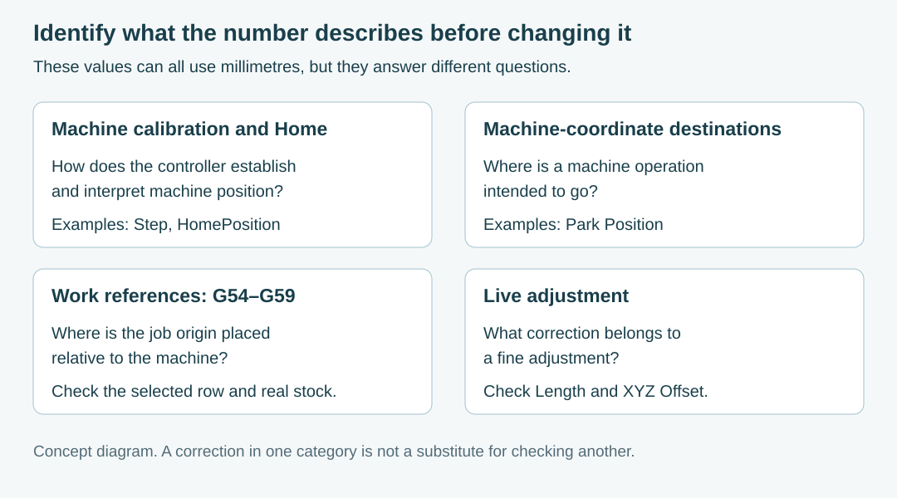

RADONIX · ROUTERXYZAC+RTCP · CHAPTER 22
Operator Manual · English · 9 October 2026
Configuration Reference
Understand what a setting describes, which operation uses it and what must be reviewed when it changes.
Expanded draft for review. Names and behavior follow the reviewed application. Example defaults identify the supplied software, not recommended values for a particular machine or cutting job.
22.1 Read a parameter reference without mistaking defaults for setup instructions
This chapter is an operator reference to the main settings families. Use Chapter 21 for navigation, entering values, OK, Cancel and direct menu operations. The tables here explain the meaning of settings; they do not authorize an operator to select new engineering values without approved machine information.
Four questions to ask about every value
| Question | What to establish | Example distinction |
|---|---|---|
| What does it describe? | The physical component, operation or display preference. | Tool-station position versus work origin. |
| What is its unit? | Distance, speed, acceleration, time, percentage or a named choice. | Milliseconds versus seconds; normalized speed versus RPM. |
| When is it used? | Immediately, by the next operation, after acceptance/rebuild, or at a new connection. | Changing a live drive request differs from editing a motion profile. |
| Who should change it? | The task authority and current application access/readiness. | A visible writable row is not proof that the operator should recalibrate it. |
Where the chapter calls a value an engineering setup item, that describes the responsibility involved. It is not a promise that every such field has an Engineering-only software permission. Actual edit access depends on the configured account, inherited access and current machine state. Always follow the restrictions shown by the application.
The supplied router uses millimetres for its linear axes. Distances and linear speeds in these tables are therefore described in mm and mm/s; acceleration is described in mm/s². A raw controller setting can be expressed in an axis's engineering units. Changing a Unit label is not a procedure for converting the whole machine to another measurement system.
Defaults and permitted ranges have different meanings
A software default is the value supplied before installation-specific settings replace it. It is not a measurement of this machine. A permitted numeric range is the editor's acceptance boundary, not a recommended operating range for a cutter, motor or mechanism. Large allowed ranges often accommodate many configurations.
For that reason, this chapter lists selected defaults only where they clarify a choice or behavior. Obtain actual travel limits, tool coordinates, timing and cutting conditions from the commissioned machine record. Do not reset an entire group simply to make its values resemble an example in the manual.
Example: a delay is accepted by the editor
A shorter delay fits the field's numerical range, but the physical mechanism may need longer to settle. The accepted number proves only that the input was retained. It does not prove the mechanism will complete safely within that time.
Record both the original and replacement value for an approved change, then inspect the result at the stage that actually uses it. Some changes need a fresh program preparation or connection; others affect a live request. The sections below identify these distinctions so that the next operating decision is based on the right evidence.
22.2 Display preferences and window behavior
Theme, Language and Monitoring Refresh Rate appear at the settings root rather than inside the Controller branch. They affect how the operator interface is presented. They do not define the physical travel, tool geometry or cutting conditions.
Select the root to inspect these values, then use General for its window-layout preference. Labels can change with the selected language or installed translation overrides. The English names below identify the settings in the reviewed interface.
| Location / setting | Choices or unit | Meaning and effect |
|---|---|---|
| Root / Theme | Light, Dark | Changes the interface theme when the value changes. Availability follows the application's window-command conditions. |
| Root / Language | Published language names | Changes the active interface language. It does not translate or rewrite the machining source file. |
| Root / Monitoring Refresh Rate | High, Low | Selects the interface refresh interval: High uses 40 ms and Low uses 100 ms in the reviewed application. |
| General / SaveWindowLayout | On/off | Controls supported window placement/layout persistence. It is not a command to save machine parameters. |
Monitoring refresh is a display preference
The refresh preference controls how frequently the interface performs its scheduled refresh work. It is not the controller's motion-cycle setting, a feed override or a spindle-speed adjustment. Choosing High does not make a machining program run faster, and choosing Low does not reduce commanded cutting speed.
Use the setting to suit the approved workstation configuration. If the display seems slow, distinguish screen-update behavior from an actual machine wait. A less frequently refreshed coordinate display does not mean that physical movement has stopped.
Language selection and translation editing are different
After a language change, use group context and the meaning of the fields rather than relying on their former screen position. Units, machine identities and source commands still require precise interpretation. If an installed translation is unclear, record the affected item instead of guessing its meaning.
Theme and other ordinary tracked preference edits can become visible before the Configuration window closes. Follow the OK/Cancel rules from Chapter 21 to accept or abandon those tracked changes. A visible change in appearance is not itself proof that the entire settings session has been saved successfully.
Example: the screen becomes dark during editing
The theme changes as the preference changes. This lets the operator see the appearance, but the final Configuration decision still matters. A later Cancel can restore a tracked preference; it does not undo unrelated live operations performed during the same visit.
Window-layout persistence concerns the presentation of supported windows. It does not preserve a machining continuation point or identify a workpiece setup. Likewise, a remembered tree selection is a navigation convenience, not evidence that the selected value has been reviewed for the current job.
For a first settings exercise, these display preferences are more appropriate than machine geometry, provided the trainer identifies the intended field and final value. Keep the task limited to that preference and verify the resulting display after acceptance.
22.3 General movement, jogging, parking and start preferences
The General branch contains operator movement preferences and selected program behaviors. Its axis subgroups refer to the main operator axes X, Y and Z. These values should not be confused with the controller's axis calibration or maximum motion limits.
Before editing a motion-related preference, identify which operation consumes it. A jog step changes the distance of a step request; a parking position specifies a destination; a traverse speed affects prepared rapid movement. None of those settings is simply another name for the cutting feed written in a program.
| Setting | Unit / interpretation | Use and review |
|---|---|---|
| TraverseVelocity | mm/s | Speed used for G0 traverse blocks and other routes that use the general traverse setting. Accepted changes can require program rebuild. |
| X, Y, Z / JogVelocity | mm/s | Base jog speed for the selected axis, combined with the jog percentage. |
| X, Y, Z / JogStep | mm | Distance for one incremental jog request. It is not encoder scale. |
| X, Y, Z / JogPosition | Absolute machine coordinate, mm | Destination used by the corresponding GoTo request; entering the value alone is not that movement request. |
| X, Y, Z / Park Position | Absolute machine coordinate, mm | Parking destination captured when parking starts and checked against travel. |
| Park Enabled | On/off | Allows automatic parking after successful main-program completion; not after manual Reset, fault or an unknown stop result. |
| JogMode | Continuous Jog / Step Jog | Selects hold-to-move or one-step behavior. Verify the actual mode before a jog request. |
| JogPage | 0 continuous page; 1 step page | Operator page selection. Read the active controls as well as the page value. |
| StartFromNextCuttingLine | On/off | Changes selected-entry resolution toward a cutting entry. Review the resulting entry and required earlier equipment actions. |
Keep the different kinds of speed separate
For example, a base jog speed of 20 mm/s with a jog percentage of 50% requests 10 mm/s before other applicable motion limits. This arithmetic explains the percentage; it is not a recommended speed for approaching a part or fixture.
The main-window Jog and Feed sliders start at 100%. Their defaults and ranges come from the form design. Changing an axis VelocityLimit is a different engineering adjustment. If the observed movement is slower than expected, first identify which operation and speed source are involved rather than increasing several unrelated values.
Parking and selected starts require an operating decision
A park position is expressed in machine coordinates. It is not the same as a work-origin coordinate or a tool-station position. Check the entire parking route and actual clearance using Chapter 9. The automatic parking preference does not take ownership of spindle shutdown; spindle control remains part of the machining program.
StartFromNextCuttingLine affects how an intended entry is resolved. It is not a general instruction to skip every move before a cut without consequence. Use Chapter 18 to inspect the resolved entry and required tool/equipment preparation. Do not change the preference merely to avoid understanding an interrupted job.
Example: a remembered work coordinate is entered as Park Position
The same number can identify a different physical location when interpreted as an absolute machine coordinate. Read the field's coordinate system and compare it with the approved machine position before requesting parking.
Jog parameter edits are gated by the application's operating state. Make approved changes while the relevant operations are settled, verify the retained values and inspect the next request's axis, direction and mode before acting.
22.4 Controller identity, connection mode and hardware configuration
The Controller branch combines connection choices, read-only information and engineering configuration. It also contains the Axes, Inverters, Tool Paths and PLC branches. Use its information fields to describe the installation accurately when reporting a problem; do not try to correct a hardware fault by changing an identity or topology value.
Mode in this branch means the controller's Simulation or Normal session. Mode inside an individual axis or module has a different meaning: Physical or Virtual device configuration. These similarly named settings are not interchangeable.
| Location / item | Meaning | Access or effect to recognize |
|---|---|---|
| Controller / Mode | Simulation or Normal. | Live reconnect operation when allowed; parent Configuration Cancel does not reverse it. |
| Controller / MAC | Address used by the runtime network link layer. | Read-only information; Not available is not a fabricated address. |
| Controller / Active Axis Count | Physical servo-axis count detected by the runtime. | Read-only; not a control for adding axes. |
| Controller / License File | Signed Radonix .ntlic package imported through its editor. | Engineering access; takes effect on the next connection. Do not type an arbitrary license string. |
| Controller / Acontis License | Whether the key was accepted during the latest connection attempt. | Read-only state, separate from importing a package. |
| PLC / MM UID | Reported controller-board identifier. | Read-only identification, not an editable board assignment. |
| PLC / Modules / module | Mode, UID, Name and Type describe a configured I/O module. | Engineering hardware definition; session restrictions apply. |
| PLC / I/O Mapping | Associates machine signal names with input/output destinations. | Use the dedicated mapping procedure; a displayed signal value is not its assignment. |
| PLC / source and shared-value groups | Machine-control programs and their associated data. | Distinguish source, configuration and live values before editing. |
Physical and Virtual describe a device definition
A Physical device requires its hardware relationship. A Virtual definition retains a logical device without that physical requirement. Changing a missing component to Virtual is not a routine way to repair the machine. It changes what the application expects and must be reviewed against the actual design.
Module UID identifies the intended module. Engineering can edit and save it while connected, but the new identity takes effect on the next connection. Module Mode requires an inactive session. Name and Type are read-only values derived from the supplied module profile. Incorrect assignments can associate a machine signal with the wrong hardware; numerical acceptance does not prove that an identity matches the installed component.
Use state messages to distinguish configured and active values
Some hardware-related changes require an inactive controller session and a new connection. Read pending-change and state messages in the relevant branch. A value displayed in Configuration can represent a configured choice that has not yet become the active session's hardware definition.
For a connection-mode task, follow Chapter 20. For hardware configuration, obtain the commissioned module and axis records and use the responsible technician's procedure. Do not disconnect a partly completed operation solely to make an otherwise unavailable row editable.
Example: fewer physical axes are reported than expected
Changing the displayed axis count is not an available repair because it is a reading. Record the count, connection state and message, then have the hardware/configuration discrepancy investigated.
The later mapping and PLC chapters explain those branches in detail. This chapter identifies their role so an operator can find and report them without confusing a configuration field with an ordinary operating control.
22.5 Axis identity, scaling, travel and motion limits
Under Controller > Axes, each axis group describes a controller axis. The base router has X, Y and Z. X Gantry, Y Gantry and Z Gantry add XG, YG and ZG respectively; all default to Disabled. Normal mode requires licensed capacity for every configured motor. Simulation permits the simulator capacity when no license is supplied. Edit topology offline with cleared ToolPaths; acceptance saves the changes and Cancel restores the draft. Identify the axis by its configured name before reading or reporting its settings.
These parameters describe how controller motion relates to the mechanism. They belong to commissioning and approved engineering adjustment. An operator should understand their purpose and recognize a mismatch, but should not use them as substitutes for work-zero adjustment or a temporary reduction in operating speed.
| Setting | Meaning / unit | Effect or restriction |
|---|---|---|
| Name | Program identity of the axis. | Change only with an inactive connection; other configuration depends on the axis catalog. |
| Mode | Physical or Virtual. | Device-definition choice, available when the connection is inactive. |
| Direction | Positive or Negative logical direction. | Engineering relationship to feedback/motion; inactive session required. |
| Step | Positive engineering-unit distance per encoder count. | Calibration scale; inactive session required. Different from JogStep. |
| Unit | Axis engineering-unit label; supplied linear axes use mm. | Not a complete machine unit-conversion procedure. |
| MinCourse / MaxCourse | Minimum and maximum permitted command position. | Travel limits, not stock dimensions or work origins. |
| VelocityLimit | Axis velocity limit; mm/s for the supplied linear axes. | A coupled group uses its master's limit. |
| Acceleration / Deceleration | Rate of velocity change; mm/s² for linear axes. | The coupled group uses its master's values, including controlled stopping. |
| Smoothness | Controller motion-smoothing amount. | Engineering motion-profile parameter, not a part-finish guarantee. |
| CouplingMaster | Master axis or None. | Inactive-session topology setting; an enabled YG follows Y; XG and ZG follow their respective masters. |
| MaxCouplingError | Permitted gantry following error in axis engineering units. | Inactive-session protection setting, not a routine way to silence an alarm. |
Do not confuse scale, step movement and work position
Step determines how a feedback count represents engineering distance. JogStep determines the distance requested by a manual incremental move. A work reference determines where the job origin lies. Adjusting one to correct a problem in another can hide the symptom while making the underlying configuration less accurate.
For example, if the part appears displaced relative to the stock, first investigate the selected origin and setup. Changing axis scale or direction is not an appropriate ordinary correction for an incorrectly established work zero.
Travel and coupling need physical knowledge
Travel bounds must represent the approved mechanism limits. Increasing a limit does not create physical clearance beyond a stop, holder or fixture. A permitted destination also does not prove that the route to it avoids every obstacle.
Coupling settings relate the gantry motors. Do not make YG independent or raise its tolerated error to continue after a gantry problem. Record the reported condition and use the machine's service procedure. The related Controller > PLC > CouplingErrorCountLimit controls the number of net out-of-tolerance one-millisecond samples before a controlled group stop; it is an engineering protection setting applied with an inactive session.
Accepted changes under the Axes branch can require rebuilding the prepared path. Read any progress-reset warning and review the resulting program before another start. For session-dependent settings, also verify the new connection and required Home procedure. Seeing the configured value in the table does not prove every active controller value has already changed.
One identified axis and its parameter descriptions
Capture an English axis group with its name, representative motion fields and description area visible. Annotate Step versus JogStep by reference, and identify any inactive-session restriction. Use the actual delivered configuration; do not label example values as approved settings for every machine.
Suggested asset: assets/images/22-axis-reference.png.
22.6 Homing direction, speeds, displacement and timeout
Home establishes the machine coordinate reference through a defined sensor-based sequence. Its settings describe the search, release and final coordinate behavior. They are different from the work origin used to place a part and from an ordinary request to move to machine zero.
Most Home parameters are under the relevant Controller > Axes group. The shared HomeTimeout is under Controller > PLC. Read the full location when comparing values, especially where X, Y, YG and Z have different mechanical arrangements.
| Setting | Unit / meaning | When or how it matters |
|---|---|---|
| HomeDirection | Positive or Negative sensor-search direction. | Used for the next Home activation; sensor release moves oppositely. |
| HomeVelocity | Search speed, mm/s for linear axes. | Controls the approach during the sensor search. |
| HomeReturnVelocity | Sensor-release speed, mm/s. | Used when moving away from the triggered sensor. |
| HomeDisplace | Signed physical displacement after sensor homing, mm. | Inactive-session change; part of establishing the final home position. |
| HomePosition | Final assigned machine coordinate, mm. | Inactive-session change; not itself the sensor-search distance. |
| PLC / HomeTimeout | Seconds; supplied default 120. | Timeout for search/release/stop phases, captured at Home activation. |
Direction of search and final coordinate are separate
HomeDirection identifies which way the mechanism searches for its sensor. HomePosition identifies the coordinate assigned by the completed procedure. A negative search does not imply that the final coordinate must be negative. These values serve different purposes.
Timeout is not a substitute for a working sensor
If Home times out, record the axis, phase and observed sensor behavior. Increasing HomeTimeout may simply allow a fault to persist longer. The cause could be an incorrect search direction, signal assignment, mechanical problem or a sequence that never reaches its required state.
The field uses seconds, unlike many tool and spindle timing fields that use milliseconds. For example, 2 seconds is 2000 milliseconds. This conversion illustrates why the unit must be checked; it is not a recommendation for a homing timeout.
Example: search completes but release does not
The sensor has been reached, yet the return/release phase fails. Increasing the search speed addresses a different part of the sequence. Report the actual failing phase and have its direction, feedback and mechanics checked.
An enabled gantry sequence also depends on valid coupling and both motors' readiness. A successful indication on only one motor is not the complete Home result. Use Chapter 6 to follow the operating procedure and aggregate completion indication.
After an approved change, perform the required controlled Home verification and recheck machine-coordinate destinations before ordinary operation. A successful Configuration save does not prove that the next search will move toward the correct physical sensor. Saved PLC source can also alter the supplied sequence, so unexplained behavior must be checked against the installed machine program.
22.7 Coordinated-motion settings and program rebuilding
The Controller > Tool Paths branch contains separate coordinated-motion groups. In the supplied router, Tool Path 0 handles the main machining program, Tool Path 1 supports positioning and Tool Path 2 is a spare path. They are motion contexts, not three independent workpieces.
Each group has the same named planning parameters, but an adjustment to one path must be reviewed in the context of its purpose. Do not copy all values between groups merely because their tables look alike.
| Setting | Unit / supplied behavior | Operator interpretation |
|---|---|---|
| AccelerationCoefficient | Multiplier, 0.001–1; supplied default 1. | Scales coordinated acceleration and deceleration. It is not the main feed-percentage control. |
| StopVelocity | Velocity threshold; mm/s for the supplied linear paths. | Junction speeds below the threshold become complete stops. It does not raise a planned speed. |
| MinimumLength | Distance, mm. Zero selects an automatic threshold based on the path axes' step lengths. | Minimum accepted line-movement distance, not minimum stock thickness or cutter diameter. |
| ContourTolerance | Distance, mm; supplied default 0.01. | Maximum contour deviation used by smooth automatic junction planning. It is not a complete part-tolerance guarantee. |
Understand the planning purpose
A machining path is built from movements that meet at junctions. The controller must decide how to change speed and direction within the permitted motion behavior. These parameters influence that planning; they do not specify an operator's desired production rate directly.
For example, increasing a stop threshold does not make the machine travel faster through a corner. Its stated role is to turn sufficiently low planned junction speeds into full stops. Similarly, a contour-tolerance number does not promise that the actual finished part will have that exact accuracy: tool deflection, calibration, material and setup still matter.
MinimumLength is concerned with acceptance of individual line movements. Its zero value has a defined automatic meaning; it does not mean that every arbitrarily tiny line must be accepted. Have the responsible person review the program and motion configuration together when short-segment behavior is the issue.
Changes affect prepared work
Accepted Tool Paths edits are among the changes that can rebuild the prepared program. Axis edits and General TraverseVelocity can also trigger that path. A confirmation about resetting program progress is therefore relevant even when you changed a single numeric field.
Before accepting, decide what will happen to any partly machined workpiece and previously selected start. After the rebuild, inspect the final preparation result, source/preview relationship and intended entry. Do not resume on the strength of an old screenshot or recorded line number.
Example: a smoother-looking preview is expected
The operator is asked to change a planning parameter. The approved change should specify the intended effect and review method. A visually familiar preview alone cannot show whether the new speed planning meets the machine's requirements.
Use the main feed control for an approved live operating adjustment, and the engineering procedure for changes to these planning values. They serve different purposes. If the current job must retain its continuation state, resolve that requirement before accepting a configuration change that rebuilds it.
Read the individual group's state message as well as its settings. A group marked ready, active or idle describes its present motion state, not certification that its parameter values are appropriate for every job.
22.8 Spindle speed scaling, timing and live inverter values
Router > Spindle contains the speed setpoint, range, manual step, start/stop timing and feedback timeout. Controller > Inverters exposes live drive requests and state.
The main operator spindle controls are explained in Chapter 10. The Configuration values below describe how those operations are configured or reported. They are not a request to start the spindle while inspecting the reference.
| Location / setting | Unit / meaning | Effect or limitation |
|---|---|---|
| Router / Spindle / Current Spindle Speed | RPM; supplied default 1000. | Last requested speed, clamped to the configured range and saved for the next connection. |
| Router / Spindle / Minimum Spindle Speed | RPM; supplied default 1000. | Lower limit for the slider and retained speed. |
| Router / Spindle / Spindle Speed Step | RPM; supplied default 100. | Increment for manual slider adjustments. |
| Router / Spindle / Maximum Spindle Speed | RPM; supplied default 24000. | Scale used to convert requested RPM to a normalized output. Must match the approved drive/spindle setup. |
| Router / Spindle / Spindle Feedback Timeout | Milliseconds; supplied default 5000. | Maximum additional wait for speed/stop feedback in the supplied sequence. |
| Router / Spindle / Spindle On Time | Milliseconds; supplied default 3000. | Minimum wait after M3/M4 starts the spindle; does not measure RPM. |
| Router / Spindle / Spindle Off Time | Milliseconds; supplied default 3000. | Deceleration wait before the supplied background logic begins its additional quiet check. |
| Controller / Inverters / Inverter Count | 0–2; default 0. | Engineering setting; disconnect and clear all ToolPaths. Mapping or PLC references block removal. Saved on acceptance; Cancel restores the draft. |
| Controller / Inverters / INV0 or INV1 / SPEED | Normalized request, 0–1. | Live value: 0.5 requests half scale. It is not a measured RPM value. |
| Controller / Inverters / INV0 or INV1 / RUN | On/off request. | Live operating/disable request; parent Cancel is not its undo. |
| Controller / Inverters / INV0 or INV1 / STATE | Observed device-state value. | Read-only. An enabled state does not prove attained spindle speed. |
Fresh settings contain no inverter. Spindle CW defaults to DM0.OUT0 and Spindle Speed to AM0.OUT0. Saved mappings are preserved; changing a factory default does not rewrite a commissioned assignment.
Separate a requested speed from a measured result
In the supplied control program, requested RPM is divided by MaximumSpindleSpeed and limited to the normalized range. For illustration, 12000 RPM against a 24000 RPM scale gives 0.5. This arithmetic does not show that a physical spindle has reached 12000 RPM.
Changing the maximum-speed scale to make a displayed percentage look convenient can change the relationship between a program's speed request and the drive output. It is a configuration adjustment, not a substitute for selecting approved cutting speed. Resolve discrepancies against the actual spindle and drive documentation.
Wait times and feedback have different roles
A minimum start wait allows time for the commanded action, while feedback checks observe the configured signal conditions. A stop delay alone is not proof of standstill. The supplied stop monitoring includes an additional quiet interval after the deceleration wait; the configured sensors and saved control program determine the actual installed behavior.
Do not reduce a timeout to speed up a cycle or extend it merely to hide a repeated failure. Record the action, elapsed stage and feedback message. The responsible person must establish whether the mechanism, sensor assignment or approved timing needs attention.
Example: RUN is true but the required speed has not been confirmed
The request indicates that operation was asked for. It is not a speed measurement. Follow the spindle sequence and diagnostics rather than treating the request bit as evidence that cutting may begin.
Live inverter edits require a connected controller and are unavailable during PLC application. Their effects are separate from ordinary deferred Configuration edits. Use the normal spindle operating controls unless direct drive interaction is explicitly part of the assigned procedure. After any approved configuration change, verify the requested direction, speed behavior and stopping response through the machine's physical acceptance procedure.
22.11 Router machining settings
Router > G73 Retract Distance sets the retract used by the G73 chip-breaking cycle. The default is 0.254 mm. The value applies when a program is loaded or reloaded.
22.12 Work references and the final review of a settings change
The Reference branch contains six stored work origins, G54 through G59. Each row contains coordinates in the main path's axis order. These values place a machining job relative to the machine; they do not move the stock, change the holder geometry or recalibrate an axis.
Use Chapter 8 for establishing and checking an origin. When viewing the same data in Configuration, identify the selected row and the axis before entering a correction. A program can use more than one reference, so the currently selected row is not necessarily the only row relevant to the job.
| Item | Meaning or review |
|---|---|
| Reference / CurrentReference | 0 = G54, 1 = G55, 2 = G56, 3 = G57, 4 = G58, 5 = G59. |
| Reference / G54–G59 / axis | Stored origin coordinate for that axis, in the configured engineering unit. |
| Reference validation | Invalid saved coordinates remain visible for correction and can be marked as errors; they are not silently replaced with a convenient origin. |
| Active-row editing | Uses the controller's coordinate-acceptance rules and current operation restrictions. |
| Change identity | Record full setting path, original value, requested value and retained value. |
| Application stage | Identify immediate effect, next-operation use, rebuild or reconnect requirements. |
| Job review | Check the resulting origin, prepared path and next start intention. |
| Physical review | Check actual stock, tools, equipment and clearance affected by the change. |
Origin correction is not machine calibration
If the stock datum was established incorrectly, the relevant correction may belong to the work reference. That is different from changing HomePosition, axis Step or a tool's Length. Determine the cause before deciding which value to adjust.
The application checks reference coordinates against its rules and axis travel information. A valid coordinate is still not proof that the real stock is clamped at that datum or that every movement clears fixtures. Review the physical setup and prepared program together.

Example: the same position number appears in two groups
A tool-station Position and a G54 coordinate happen to contain the same number. They still describe different things. Changing the station coordinate to correct the part origin would alter an unrelated machine operation.
Close the change with evidence
Before accepting an approved adjustment, identify every affected field and compare the retained values with the instruction. Read any pending-change message and any request to reset program progress. Use Chapter 21 for the exact acceptance and cancellation behavior.
After acceptance, inspect the stage that uses the setting. A preference needs a display check; a prepared-motion change needs a preparation review; a session-dependent hardware value needs the appropriate reconnection and machine checks. A measured result needs identification of the actual tool or reference to which it belongs.
If the change is cancelled, verify what was restored and account separately for any live operation, measurement, direct save, export, import or reset already performed. The Configuration window does not provide a universal undo for all of those actions.
Keep the change record with the machine or job documentation so another operator knows what was changed and what remains to be verified. Do not describe a parameter as “tested” when only its input format was accepted. State the actual check performed and the observed result.
The next chapter examines I/O configuration and signal mapping. That subject connects named machine functions to their physical or configured signals; it should be approached with the same distinction between an accepted value and a verified physical result.
Documentation basis
Topology, inverter and spindle defaults reviewed against source on 9 November 2026; other sections retain their original review scope. No controller connection or machine operation was performed for this chapter. Saved settings and control-program sources can differ from the supplied configuration. Reserved screenshots require capture from the delivered application.
Configuration/GeneralLinks.csConfiguration/ReferenceLinks.csConfiguration/RouterLinks.csConfiguration/Controller/ControllerLinks.csConfiguration/Controller/AxesLinks.csConfiguration/Controller/ToolPathLinks.csConfiguration/Controller/PLCLinks.csConfiguration/Controller/PLCModules.csConfiguration/Controller/PLCMapping.csConfiguration/Controller/InverterLinks.csConfiguration/Controller/SpindleLinks.cs